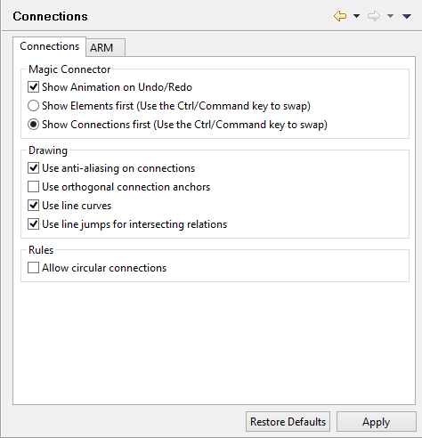
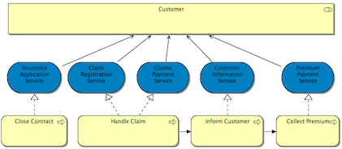
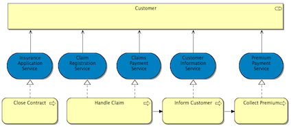
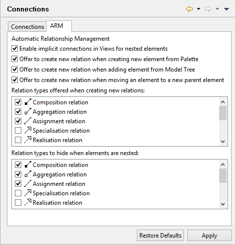

Préférences des connexions
Afficher les animations pour Annuler/Refaire
Choisir cette option pour activer l'animation "cosmétique" quand un annuler/refaire est exécuté pour un élément dessiné avec le connecteur magique.
Afficher d'abord les éléments (Utiliser la combinaison de touches Ctrl/Command pour inverser le comportement)
Quand on clique sur le connecteur magique dans un canevas vide d'une vue, affiche d'abord les éléments puis les connexions dans les menus surgissants. Appuyer simultanément sur les touches Ctrl / Command inversera ce comportement.
Afficher d'abord les connexions (Utiliser la combinaison de touches Ctrl/Command pour inverser le comportement)
Quand on clique sur le connecteur magique dans un canevas vide d'une vue, affiche d'abord les connexions puis les éléments dans les menus surgissants. Appuyer simultanément sur les touches Ctrl / Command inversera ce comportement.
utiliser l'anti-aliasing sur les connexions
Sur les systèmes d'exploitation Windows et Linux, s'assure que les connexions sont dessinées de manière plus douce.
Utiliser les ancres de connexion orthogonales
Si ceci est coché alors une nouvelle méthode pour calculer le point d'ancrage d'une connexion sera utilisée (la position où une connexion est attachée à un élément graphique). Par défaut (option non cochée), le point d'ancrage est calculé comme intersection du bord de l'élément graphique et de la connexion visant le centre de ce même élément graphique. Avec cette option, le point d'ancrage est calculé pour faire que la connexion soit une ligne soit verticale soit horizontale (si ceci n'est pas possible, la connexion se fait sur l'un des coins de l'élément graphique). il est possible de déplacer ce point d'ancrage simplement en déplaçant l'élément graphique ou en créeant un point de courbure dans la connexion puis en le déplaçant.
Par exemple, si l'option n'est pas cochée (valeur par défaut), la connexion apparaît comme suit:
Si l'option est cochée, la connexion apparaît comme suit:

Utiliser des lignes courbes
Si ceci est activé, les connexions sont affichées avec des courbes aux points de courbure.
Utiliser des sauts de ligne pour les relations se croisant
Si ceci est coché, un saut courbe est affiché quand une connexion en croise une autre.
Autoriser les connexions circulaires
Choisir d'autoriser les connexions qui partent et arrivent sur le même élément. Voir ici pour plus d'informations.

Préférences des GAR
Pour plus d'informations, voir Éléments conteneurs et relations des éléments imbriqués.
Active les connexions implicites dans les vues pour les éléments imbriqués
Si ceci est activé, alors les éléments imbriqués parent/enfants seront considérés comme ayant une connexion implicite dans une vue représentant une relation entre les éléments du modèle.
Proposer la création d'une nouvelle relation quand on crée un nouvel élément depuis la palette
Si ceci est activé, quand un nouvel élément est ajouté à partir de la palette dans un élément parent dans la vue, un dialogue apparaît et propose de créer une nouvelle relation entre les éléments parent et enfant.
Proposer de créer une nouvelle relation quand on ajouter un élément à partir de l'arborescence des modèles
Si ceci est activé, quand un nouvel élément est ajouté depuis l'arborescence des modèles dans un élément parent dans la vue, un dialogue apparaît pour créer une nouvelle relation entre les éléments parent et enfant s'il n'en existe pas déjà une.
Proposer de créer une nouvelle relation quand on déplace un élement sur un nouvel élément parent
Si ceci est activé, quand un élément de la vue est glissé-déposé sur un élément parent dans la vue, un dialogue apparaît pour proposer de créer une nouvelle relation entre les éléments parent et enfant s'il n'en existe pas déjà une.
Types de relation proposés à la création de nouvelles relations
Choisir les types de relation qui seront proposées quand de nouvelles connexions implicites sont créées entre des éléments parent et enfant dans une vue. Par défaut, ce sont les types Composition, Agrégation et Affectation.
Types de relation à masquer quand des éléments sont imbriqués
Choisir les types des connexions de relation qui seront masqués dans une vue quand il y a des éléments parent et enfant imbriqués. Par défaut, ce sont les types Composition, Agrégation et Affectation.